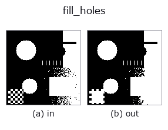

region op• Data kinds: region → region
• Call: fullseye.apply(img, "fill_holes", a=0.5, b=0.5) (2-D model = एक image + दो scalar knobs a,b∈[0,1])
• HALCON समकक्ष: fill_up (अर्थ और parameters समझने के लिए HALCON reference उपयोगी है)

*Figure synthetic 128×128 input पर सच में चलाकर मिला output है। बाईं ओर input, दाईं ओर output। Point clouds ऊपर से देखे गए scatter के रूप में (brightness = z), 1-D series line के रूप में, volumes z दिशा में maximum-intensity projection के रूप में, videos बीच के frame के रूप में, complex images amplitude के रूप में, और जो return values चित्र नहीं बन सकते वे स्वयं values के रूप में दिखाए जाते हैं।*
*Knob a output नहीं बदलता (मापा गया: 0.1 / 0.5 / 0.9 पर एक जैसा)।*
*Knob b output नहीं बदलता (मापा गया: 0.1 / 0.5 / 0.9 पर एक जैसा)।*
Stages (पहले आने वाले ops → यह op, बाएँ से क्रम में):
▸ fill_holes: stages का figure (docs site)
दूसरी images पर भी (synthetic scene / photo / coins। ऊपर की row में inputs, नीचे की row में उनके outputs। Knobs default पर):
▸ fill_holes: दूसरी images पर output (docs site)
Region के अंदर के छेद भरता है। HALCON के fill_up (Fill up holes in regions.) के समकक्ष है।
a, b उपयोग नहीं होते। foreground से पूरी तरह घिरे हर background pixel (छेद) को foreground में बदलता है (scipy.ndimage.binary_fill_holes)। image के किनारे को छूने वाले background को छेद नहीं माना जाता, इसलिए वह नहीं भरता।
connectivity: छेद तय करने में उपयोग होने वाला background 4-connected है (scipy.ndimage.binary_fill_holes का default)। केवल तिरछे जुड़े background को जुड़ा नहीं माना जाता, इसलिए checkerboard pattern में भीतर के सभी background pixel छेद के रूप में भर जाते हैं (8x8 पर 32 -> 50 pixel; मापने पर scipy के 4-connected reference से position तक मेल खाता है, 8-connected से नहीं)। 2nd implementation ने यहाँ अलग connectivity चुनी थी, जो difference check में सामने आई।
• gallery2d_region family guide
• Sample data catalog (DL URL / license) — 2-D के लिए skimage.data (BSD/public) + synthetic, 3-D के लिए real data sources (Stanford/PDS आदि) के DL URL।
• Operators का स्रोत और संदर्भ — इस op family के मूल research/methods के स्रोत।
• Algorithm का मानक स्रोत (लेखक, वर्ष) और उपयोग ऊपर की family usage guide में दिए गए हैं।
नीचे का program सच में चलता है, यह जाँचा गया है (figure वाला ही input)। Studio की help में यह block buttons बन जाता है, जिनसे इसे वहीं load करके चलाया जा सकता है।
threshold 0.50 0.50 fill_holes 0.50 0.50
▸ यह pipeline load करें · Load करके चलाएँ
• gallery2d_region — py -3.11 examples/gallery2d_region.py
• poc_cell_counting — py -3.11 examples/poc_cell_counting.py
• poc_document_scan — py -3.11 examples/poc_document_scan.py
• poc_leaf_disease_area — py -3.11 examples/poc_leaf_disease_area.py
• poc_mesh_quality_repair — py -3.11 examples/poc_mesh_quality_repair.py
• poc_real_coin_metrology — py -3.11 examples/poc_real_coin_metrology.py
• poc_symmetry_restoration — py -3.11 examples/poc_symmetry_restoration.py
region को input के रूप में लेते हैं)identity · reg_erode · reg_dilate · reg_open · reg_close · select_largest · remove_small · invert_region
region)reg_erode · reg_dilate · reg_open · reg_close · select_largest · remove_small · invert_region · dist_transform
*Provenance: ops.py — 2D operator registry. यह per-op note tools/opdocs.py md से अपने-आप generate होता है (हाथ से edit न करें)।*
© 2026 Kazufumi Furuse — Fullseye operator documentation. Licensed under Apache-2.0.